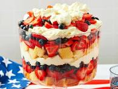

American Trifle

Description
This red white and blue trifle is perfect for Fourth of July or BBQ party.
It's a creamy, fruity, heavenly dessert! I've been told it's like a super-
charged strawberry shortcake.
Ingredients
- 3 pounds fresh strawberries, hulled and sliced
- ¼ cup white sugar or to taste
- 1 quart heavy cream
- 1 (6 ounce) container lemon yogurt
- 1 (3.3 ounce) package instant white chocolate pudding mix
- 2 tablespoons coconut-flavored rum, or to taste, divided (Optional)
- 2 (16 ounce) prepared pound cakes, cubed
- 2 pints fresh blueberries, or as needed
Steps
- Gather all ingredients.
- Sprinkle strawberries with sugar in a bowl; stir to distribute sugar,
and set aside
- Chill a large metal mixing bowl and beaters from an electric mixer.
- Pour cream into the chilled mixing bowl, and add lemon yogurt, pudding
mix, and about 1 tablespoon of coconut rum; beat until fluffy with an
electric mixer set on medium speed.
- Spread a layer of pound cake cubes into the bottom of a glass trifle
dish, and sprinkle cubes with remaining tablespoon coconut rum. Cover
pound cake with a layer of strawberries; sprinkle blueberries over
strawberries. Spread a thick layer of whipped cream over the berries.
- Repeat the layers several times, ending with a layer of strawberries
sprinkled with blueberries and reserving about 1 cup of whipped cream;
top the trifle with dollops of whipped cream to serve. Refrigerate
leftovers.
Back to HOME PAGE